justin-overshirt-idle.svg
36 × 62 px · 1300 / 160 / 1300 ms, loops
standing, blinking
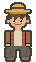
justin-overshirt-idle-0.svg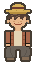
justin-overshirt-idle-1.svgjustin-overshirt-idle-2.svgPixel sprites exported from the site's sheets as plain SVG, with the outer outline already in the soft brown that the dark ground needs. Each action is shown at true size and at 4×. Animated files switch frames with a CSS animation inside the SVG, so an <img> plays them. Place them at true size, feet on a line the layout already has. See README.md for the rules.
Justin in his straw hat, a rust over-shirt open over a plain oat tee, and loose textured trousers. He wears this on the pathway.
justin-overshirt-idle.svg
36 × 62 px · 1300 / 160 / 1300 ms, loops
standing, blinking

justin-overshirt-idle-0.svg
justin-overshirt-idle-1.svgjustin-overshirt-idle-2.svgjustin-overshirt-walk.svg
36 × 62 px · 200 ms per frame, loops
side view, facing right; stride 7 px per frame
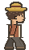
justin-overshirt-walk-0.svg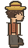
justin-overshirt-walk-1.svg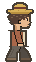
justin-overshirt-walk-2.svg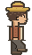
justin-overshirt-walk-3.svgjustin-overshirt-sit.svg
52 × 52 px · 3200 / 160 ms, loops
sitting on the ground, side view, blinking
justin-overshirt-sit-0.svg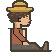
justin-overshirt-sit-1.svg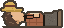
justin-overshirt-sleep-0.svg
64 × 28 px · 1 frame, static
flat on his back, the hat resting on his face
justin-overshirt-sleep-0.svgjustin-overshirt-sip.svg
36 × 62 px · 2600 / 1000 ms, loops
an espresso cup held at the chest, then raised
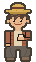
justin-overshirt-sip-0.svg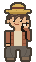
justin-overshirt-sip-1.svgjustin-overshirt-hat.svg
42 × 62 px · 250 / 300 / 200 / 800 ms, loops
the hat tip with a nod; a one-shot the design steps frame by frame
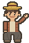
justin-overshirt-hat-0.svg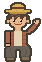
justin-overshirt-hat-1.svg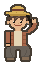
justin-overshirt-hat-2.svg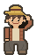
justin-overshirt-hat-3.svgjustin-overshirt-arms-up.svg
56 × 62 px · 350 / 250 ms, loops
the cheer for the search command "Episode 1070"
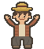
justin-overshirt-arms-up-0.svg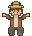
justin-overshirt-arms-up-1.svgjustin-overshirt-carry.svg
36 × 62 px · 1400 / 600 ms, loops
holding the top two shoeboxes from the rack, at step 1
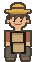
justin-overshirt-carry-0.svg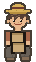
justin-overshirt-carry-1.svgjustin-overshirt-type.svg
64 × 62 px · 400 ms per frame, loops
at his desk, side view, hands on the keys
justin-overshirt-type-0.svgjustin-overshirt-type-1.svgjustin-overshirt-type-2.svgjustin-overshirt-pet.svg
51 × 56 px · 900 / 400 / 500 ms, loops
kneeling to pet Truffle while she sits up
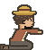
justin-overshirt-pet-0.svg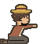
justin-overshirt-pet-1.svg
justin-overshirt-pet-2.svgjustin-overshirt-pet-low.svg
51 × 56 px · 900 / 400 / 500 ms, loops
the same kneel while she lies down

justin-overshirt-pet-low-0.svg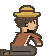
justin-overshirt-pet-low-1.svg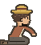
justin-overshirt-pet-low-2.svgjustin-overshirt-wave.svg
46 × 62 px · 500 / 200 / 400 / 200 ms, loops
the hello wave
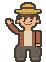
justin-overshirt-wave-0.svg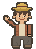
justin-overshirt-wave-1.svg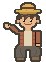
justin-overshirt-wave-2.svgjustin-overshirt-wave-3.svgjustin-overshirt-press.svg
47 × 62 px · 250 / 600 ms, loops
pressing the espresso machine's button; a one-shot
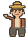
justin-overshirt-press-0.svg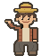
justin-overshirt-press-1.svgjustin-overshirt-grab.svg
47 × 62 px · 400 / 500 / 300 / 500 / 700 ms, loops
taking the cup from the tray; a one-shot
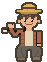
justin-overshirt-grab-0.svg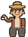
justin-overshirt-grab-1.svg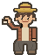
justin-overshirt-grab-2.svg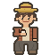
justin-overshirt-grab-3.svg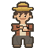
justin-overshirt-grab-4.svgjustin-overshirt-pat.svg
48 × 62 px · 900 / 400 / 500 ms, loops
patting the cow
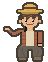
justin-overshirt-pat-0.svg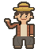
justin-overshirt-pat-1.svgjustin-overshirt-pat-2.svgjustin-overshirt-nod.svg
36 × 62 px · 200 / 500 ms, loops
his answer when Truffle paws for a pet; a one-shot
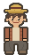
justin-overshirt-nod-0.svg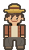
justin-overshirt-nod-1.svgjustin-overshirt-pickup.svg
51 × 62 px · 350 / 250 / 300 ms, loops
picking the tennis ball up; a one-shot
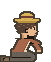
justin-overshirt-pickup-0.svg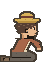
justin-overshirt-pickup-1.svg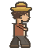
justin-overshirt-pickup-2.svgjustin-overshirt-throw.svg
44 × 62 px · 300 / 300 / 150 / 250 / 200 ms, loops
an underhand toss of the ball to the right; a one-shot
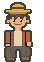
justin-overshirt-throw-0.svg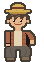
justin-overshirt-throw-1.svg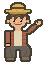
justin-overshirt-throw-2.svg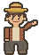
justin-overshirt-throw-3.svg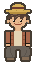
justin-overshirt-throw-4.svgjustin-overshirt-pull.svg
36 × 62 px · 75 / 75 / 75 / 75 / 75 / 75 / 75 / 75 ms, loops
pulling the chair out, in step with the desk's `tuck` played backwards
justin-overshirt-pull-0.svg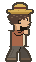
justin-overshirt-pull-1.svgjustin-overshirt-pull-2.svgjustin-overshirt-pull-3.svg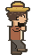
justin-overshirt-pull-4.svgjustin-overshirt-pull-5.svg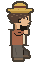
justin-overshirt-pull-6.svg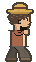
justin-overshirt-pull-7.svgThe same frames with the over-shirt swapped for a slate hoodie, hood down on the shoulders. He wears this beside his title in the first pane, so the two of him on one screen are told apart.
justin-hoodie-idle.svg
36 × 62 px · 1300 / 160 / 1300 ms, loops
standing, blinking
justin-hoodie-idle-0.svg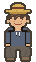
justin-hoodie-idle-1.svg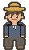
justin-hoodie-idle-2.svgjustin-hoodie-walk.svg
36 × 62 px · 200 ms per frame, loops
side view, facing right; stride 7 px per frame
justin-hoodie-walk-0.svgjustin-hoodie-walk-1.svgjustin-hoodie-walk-2.svgjustin-hoodie-walk-3.svgjustin-hoodie-sit.svg
52 × 52 px · 3200 / 160 ms, loops
sitting on the ground, side view, blinking
justin-hoodie-sit-0.svgjustin-hoodie-sit-1.svgjustin-hoodie-sleep-0.svg
64 × 28 px · 1 frame, static
flat on his back, the hat resting on his face
justin-hoodie-sleep-0.svgjustin-hoodie-sip.svg
36 × 62 px · 2600 / 1000 ms, loops
an espresso cup held at the chest, then raised
justin-hoodie-sip-0.svgjustin-hoodie-sip-1.svgjustin-hoodie-hat.svg
42 × 62 px · 250 / 300 / 200 / 800 ms, loops
the hat tip with a nod; a one-shot the design steps frame by frame
justin-hoodie-hat-0.svgjustin-hoodie-hat-1.svgjustin-hoodie-hat-2.svgjustin-hoodie-hat-3.svgjustin-hoodie-arms-up.svg
56 × 62 px · 350 / 250 ms, loops
the cheer for the search command "Episode 1070"
justin-hoodie-arms-up-0.svgjustin-hoodie-arms-up-1.svgjustin-hoodie-carry.svg
36 × 62 px · 1400 / 600 ms, loops
holding the top two shoeboxes from the rack, at step 1
justin-hoodie-carry-0.svgjustin-hoodie-carry-1.svgjustin-hoodie-type.svg
64 × 62 px · 400 ms per frame, loops
at his desk, side view, hands on the keys
justin-hoodie-type-0.svgjustin-hoodie-type-1.svgjustin-hoodie-type-2.svgjustin-hoodie-pet.svg
51 × 56 px · 900 / 400 / 500 ms, loops
kneeling to pet Truffle while she sits up
justin-hoodie-pet-0.svgjustin-hoodie-pet-1.svg
justin-hoodie-pet-2.svgjustin-hoodie-pet-low.svg
51 × 56 px · 900 / 400 / 500 ms, loops
the same kneel while she lies down
justin-hoodie-pet-low-0.svgjustin-hoodie-pet-low-1.svg
justin-hoodie-pet-low-2.svgjustin-hoodie-wave.svg
46 × 62 px · 500 / 200 / 400 / 200 ms, loops
the hello wave
justin-hoodie-wave-0.svgjustin-hoodie-wave-1.svgjustin-hoodie-wave-2.svgjustin-hoodie-wave-3.svgjustin-hoodie-press.svg
47 × 62 px · 250 / 600 ms, loops
pressing the espresso machine's button; a one-shot
justin-hoodie-press-0.svgjustin-hoodie-press-1.svgjustin-hoodie-grab.svg
47 × 62 px · 400 / 500 / 300 / 500 / 700 ms, loops
taking the cup from the tray; a one-shot
justin-hoodie-grab-0.svgjustin-hoodie-grab-1.svgjustin-hoodie-grab-2.svgjustin-hoodie-grab-3.svgjustin-hoodie-grab-4.svgjustin-hoodie-pat.svg
48 × 62 px · 900 / 400 / 500 ms, loops
patting the cow
justin-hoodie-pat-0.svgjustin-hoodie-pat-1.svgjustin-hoodie-pat-2.svgjustin-hoodie-nod.svg
36 × 62 px · 200 / 500 ms, loops
his answer when Truffle paws for a pet; a one-shot
justin-hoodie-nod-0.svgjustin-hoodie-nod-1.svgjustin-hoodie-pickup.svg
51 × 62 px · 350 / 250 / 300 ms, loops
picking the tennis ball up; a one-shot
justin-hoodie-pickup-0.svgjustin-hoodie-pickup-1.svgjustin-hoodie-pickup-2.svgjustin-hoodie-throw.svg
44 × 62 px · 300 / 300 / 150 / 250 / 200 ms, loops
an underhand toss of the ball to the right; a one-shot
justin-hoodie-throw-0.svgjustin-hoodie-throw-1.svgjustin-hoodie-throw-2.svgjustin-hoodie-throw-3.svgjustin-hoodie-throw-4.svgjustin-hoodie-pull.svg
36 × 62 px · 75 / 75 / 75 / 75 / 75 / 75 / 75 / 75 ms, loops
pulling the chair out, in step with the desk's `tuck` played backwards
justin-hoodie-pull-0.svgjustin-hoodie-pull-1.svgjustin-hoodie-pull-2.svgjustin-hoodie-pull-3.svgjustin-hoodie-pull-4.svgjustin-hoodie-pull-5.svgjustin-hoodie-pull-6.svgjustin-hoodie-pull-7.svgJustin's French Bulldog. She sleeps at step 2 of the pathway until he comes over to pet her.
truffle-sleep.svg
36 × 20 px · 2300 / 700 ms, loops
lying down, head on her paws, breathing
truffle-sleep-0.svgtruffle-sleep-1.svgtruffle-ear.svg
36 × 20 px · 1100 / 300 ms, then holds frame 2
one ear pricks up and an eye opens a slit; plays once and holds
truffle-ear-0.svgtruffle-ear-1.svgtruffle-ear-2.svgtruffle-sit-0.svg
24 × 24 px · 1 frame, static
sitting up, awake, from the front
truffle-sit-0.svgtruffle-walk.svg
34 × 26 px · 110 ms per frame, loops
a stroll, facing right; stride 2 px per frame
truffle-walk-0.svgtruffle-walk-1.svgtruffle-walk-2.svgtruffle-walk-3.svgtruffle-walk-4.svgtruffle-walk-5.svgtruffle-walk-6.svgtruffle-walk-7.svgtruffle-trot.svg
34 × 26 px · 90 ms per frame, loops
a trot, facing right; stride 6 px per frame
truffle-trot-0.svgtruffle-trot-1.svgtruffle-trot-2.svgtruffle-trot-3.svgtruffle-paw.svg
30 × 24 px · 400 / 350 / 250 / 300 ms, loops
asking for a pet with one front paw
truffle-paw-0.svgtruffle-paw-1.svgtruffle-paw-2.svgtruffle-paw-3.svgtruffle-wake.svg
36 × 26 px · 400 / 350 / 350 / 300 ms, loops
waking up: from lying down to on her feet
truffle-wake-0.svgtruffle-wake-1.svgtruffle-wake-2.svgtruffle-wake-3.svgOne of Justin's two agents: a blue robot in the same straw hat and the slate hoodie. He flies between the pathway and the open pane to do small jobs.
luibot-idle.svg
28 × 32 px · 2800 / 160 ms, loops
standing, blinking
luibot-idle-0.svgluibot-idle-1.svgluibot-wave.svg
28 × 32 px · 220 ms per frame, loops
waving
luibot-wave-0.svgluibot-wave-1.svgluibot-fly.svg
28 × 37 px · 260 ms per frame, loops
hovering on two thruster flames
luibot-fly-0.svgluibot-fly-1.svgluibot-fly-wave.svg
28 × 37 px · 260 ms per frame, loops
hovering with the waving arm, for flipping a switch or pushing a chair in
luibot-fly-wave-0.svgluibot-fly-wave-1.svgluibot-feed.svg
28 × 37 px · 260 ms per frame, loops
hovering and pouring grain from a small sack
luibot-feed-0.svgluibot-feed-1.svgluibot-fly-carry.svg
28 × 41 px · 260 ms per frame, loops
hovering with the two shoeboxes hugged in front
luibot-fly-carry-0.svgluibot-fly-carry-1.svgluibot-beam-out.svg
28 × 32 px · 70 / 70 / 70 / 70 / 70 / 70 ms, loops
the teleport, leaving; a one-shot
luibot-beam-out-0.svgluibot-beam-out-1.svgluibot-beam-out-2.svgluibot-beam-out-3.svgluibot-beam-out-4.svgluibot-beam-out-5.svgluibot-beam-in.svg
28 × 32 px · 70 / 70 / 70 / 70 / 70 / 70 ms, loops
the teleport, arriving; a one-shot
luibot-beam-in-0.svgluibot-beam-in-1.svgluibot-beam-in-2.svgluibot-beam-in-3.svgluibot-beam-in-4.svgluibot-beam-in-5.svgluibot-beam-out-fly.svg
28 × 37 px · 70 / 70 / 70 / 70 / 70 / 70 ms, loops
the teleport, leaving, while he hovers
luibot-beam-out-fly-0.svgluibot-beam-out-fly-1.svgluibot-beam-out-fly-2.svgluibot-beam-out-fly-3.svgluibot-beam-out-fly-4.svgluibot-beam-out-fly-5.svgluibot-beam-in-fly.svg
28 × 37 px · 70 / 70 / 70 / 70 / 70 / 70 ms, loops
the teleport, arriving, while he hovers
luibot-beam-in-fly-0.svgluibot-beam-in-fly-1.svgluibot-beam-in-fly-2.svgluibot-beam-in-fly-3.svgluibot-beam-in-fly-4.svgluibot-beam-in-fly-5.svgJustin's other agent: an orange, boxy robot in the straw hat and the rust over-shirt, one hand resting on a stone block.
luibuilder-idle.svg
30 × 34 px · 3400 / 160 ms, loops
standing with a hand on the stone block, blinking
luibuilder-idle-0.svgluibuilder-idle-1.svgluibuilder-wave.svg
30 × 34 px · 240 ms, then holds frame 1
tips his hat; plays once and holds
luibuilder-wave-0.svgluibuilder-wave-1.svgluibuilder-stand.svg
30 × 34 px · 3400 / 160 ms, loops
standing without the block, for the projects pane
luibuilder-stand-0.svgluibuilder-stand-1.svgluibuilder-build.svg
30 × 34 px · 300 / 120 / 180 ms, loops
one hammer strike; a one-shot the design repeats a few times
luibuilder-build-0.svgluibuilder-build-1.svgluibuilder-build-2.svgluibuilder-hop.svg
34 × 34 px · 140 / 420 / 140 ms, loops
crouch, airborne, land
luibuilder-hop-0.svgluibuilder-hop-1.svgluibuilder-hop-2.svgluibuilder-beam-out.svg
30 × 34 px · 70 / 70 / 70 / 70 / 70 / 70 ms, loops
the teleport, leaving; a one-shot
luibuilder-beam-out-0.svgluibuilder-beam-out-1.svgluibuilder-beam-out-2.svgluibuilder-beam-out-3.svgluibuilder-beam-out-4.svgluibuilder-beam-out-5.svgluibuilder-beam-in.svg
30 × 34 px · 70 / 70 / 70 / 70 / 70 / 70 ms, loops
the teleport, arriving; a one-shot
luibuilder-beam-in-0.svgluibuilder-beam-in-1.svgluibuilder-beam-in-2.svgluibuilder-beam-in-3.svgluibuilder-beam-in-4.svgluibuilder-beam-in-5.svgThe desk and chair at the last step, with nobody in the chair. It has the same canvas as Justin's `type`, so the two swap at one position.

desk-idle-0.svg
64 × 62 px · 1 frame, static
the chair pulled out
desk-idle-0.svgdesk-tuck.svg
64 × 62 px · 75 / 75 / 75 / 75 / 75 / 75 / 75 / 75 ms, loops
the chair slides under the desk; a one-shot the design steps frame by frame
desk-tuck-0.svgdesk-tuck-1.svgdesk-tuck-2.svgdesk-tuck-3.svgdesk-tuck-4.svgdesk-tuck-5.svgdesk-tuck-6.svgdesk-tuck-7.svgTruffle's ball. Its frame follows how far it has travelled (a quarter turn per frame, one turn per circumference), not a clock.
ball-roll.svg
10 × 10 px · 1200 ms per frame, loops
a quarter turn per frame, rolling to the right; frame 0 is at rest
ball-roll-0.svgball-roll-1.svgball-roll-2.svgball-roll-3.svgThe espresso machine and the grinder on their own cabinet, at step 5.
coffee-idle-0.svg
43 × 50 px · 1 frame, static
at rest
coffee-idle-0.svgcoffee-empty-0.svg
43 × 50 px · 1 frame, static
the cup is gone, because it is in his hand
coffee-empty-0.svgcoffee-brew.svg
43 × 50 px · 600 / 900 / 900 / 700 ms, loops
pulling a shot
coffee-brew-0.svgcoffee-brew-1.svgcoffee-brew-2.svgcoffee-brew-3.svgcoffee-ready.svg
43 × 50 px · 450 / 450 ms, loops
the cup on the tray, steaming
coffee-ready-0.svgcoffee-ready-1.svgThe rack of shoes and shoeboxes at step 1.
shoe-rack-idle-0.svg
53 × 36 px · 1 frame, static
every box on the rack
shoe-rack-idle-0.svgshoe-rack-boxes-out-0.svg
53 × 36 px · 1 frame, static
the top two boxes taken
shoe-rack-boxes-out-0.svgThe two boxes he takes from the rack, cell for cell the ones in his `carry`.
shoeboxes-idle-0.svg
16 × 23 px · 1 frame, static
set down on the floor
shoeboxes-idle-0.svgLoose tufts for the farm, drawn with no outline.
grass-tuft-a.svg
7 × 5 px · 4000 / 700 ms, loops
a tuft that sways now and then
grass-tuft-a-0.svggrass-tuft-a-1.svggrass-tuft-b-0.svg
5 × 3 px · 1 frame, static
a small tuft
grass-tuft-b-0.svggrass-tuft-c-0.svg
9 × 4 px · 1 frame, static
a wide tuft
grass-tuft-c-0.svggrass-tuft-d-0.svg
6 × 6 px · 1 frame, static
a tall tuft
grass-tuft-d-0.svgThe farm's fence, built from repeated segments.
fence-segment-0.svg
16 × 12 px · 1 frame, static
one repeatable length
fence-segment-0.svgfence-end-0.svg
4 × 12 px · 1 frame, static
the closing post
fence-end-0.svgNew York, inside the first future plan's heading.
skyline-idle.svg
96 × 42 px · 4200 / 2600 / 5400 / 3100 / 4700 / 2200 ms, loops
a few lit windows change, slowly
skyline-idle-0.svgskyline-idle-1.svgskyline-idle-2.svgskyline-idle-3.svgskyline-idle-4.svgskyline-idle-5.svgA wisp from a roof vent on the skyline.
steam-rise.svg
5 × 6 px · 450 / 450 / 450 ms, loops
rising
steam-rise-0.svgsteam-rise-1.svgsteam-rise-2.svgThe board on the skyline's roofs. The words on it are real text laid over its panel.
billboard-idle.svg
61 × 22 px · 600 ms, then holds frame 1
frame 0 lamps off, frame 1 lamps lit; holds
billboard-idle-0.svgbillboard-idle-1.svgJapan, inside the second future plan's heading.
cherry-tree-idle-0.svg
40 × 40 px · 1 frame, static
in blossom
cherry-tree-idle-0.svgOne petal from the cherry tree.
petal-fall.svg
5 × 10 px · 220 / 220 / 220 ms, then holds frame 3
falling; plays once and holds
petal-fall-0.svgpetal-fall-1.svgpetal-fall-2.svgpetal-fall-3.svgThe stones luibuilder works on among the projects.
stones-idle-0.svg
7 × 14 px · 1 frame, static
at rest
stones-idle-0.svgstones-strike-0.svg
7 × 14 px · 1 frame, static
a chip flies off as the hammer lands
stones-strike-0.svgThe hanging board of the farm. The words on it are real text laid over its panel.
farm-sign-idle-0.svg
61 × 22 px · 1 frame, static
at rest
farm-sign-idle-0.svgThe gate beside the cherry tree. The words on its board are real text laid over its panel.
torii-idle-0.svg
46 × 34 px · 1 frame, static
at rest
torii-idle-0.svgtorii-rested-0.svg
46 × 34 px · 1 frame, static
a petal has landed on the top beam
torii-rested-0.svgThe grain luibot pours for the hen.
feed-fall.svg
9 × 16 px · 140 / 140 / 140 ms, then holds frame 3
falling; plays once and holds
feed-fall-0.svgfeed-fall-1.svgfeed-fall-2.svgfeed-fall-3.svgfeed-pile-0.svg
9 × 16 px · 1 frame, static
a full pile
feed-pile-0.svgfeed-pile-half-0.svg
9 × 16 px · 1 frame, static
half eaten
feed-pile-half-0.svgThe hen of the farm.
chicken-idle.svg
23 × 19 px · 3200 / 150 ms, loops
standing, blinking
chicken-idle-0.svgchicken-idle-1.svgchicken-peck.svg
23 × 19 px · 1800 / 130 / 260 / 130 ms, loops
pecking at the feed
chicken-peck-0.svgchicken-peck-1.svgchicken-peck-2.svgchicken-peck-3.svgchicken-walk.svg
23 × 19 px · 180 ms per frame, loops
walking, facing right
chicken-walk-0.svgchicken-walk-1.svgchicken-walk-2.svgchicken-walk-3.svgThe cow at step 4 of the pathway.
cow-idle.svg
64 × 42 px · 3400 / 150 ms, loops
standing, blinking
cow-idle-0.svgcow-idle-1.svgcow-graze.svg
64 × 42 px · 2600 / 180 / 700 / 350 / 500 / 350 / 180 ms, loops
grazing
cow-graze-0.svgcow-graze-1.svgcow-graze-2.svgcow-graze-3.svgcow-graze-4.svgcow-graze-5.svgcow-graze-6.svgcow-walk.svg
64 × 42 px · 260 ms per frame, loops
walking, facing right
cow-walk-0.svgcow-walk-1.svgcow-walk-2.svgcow-walk-3.svgcow-tail.svg
64 × 42 px · 2400 / 400 / 400 ms, loops
a swish of the tail
cow-tail-0.svgcow-tail-1.svgcow-tail-2.svgThe sheep grazing beside the farm's heading.
sheep-idle.svg
38 × 28 px · 3000 / 400 ms, loops
standing, blinking
sheep-idle-0.svgsheep-idle-1.svgsheep-graze.svg
38 × 28 px · 2600 / 180 / 700 / 350 / 180 ms, loops
grazing
sheep-graze-0.svgsheep-graze-1.svgsheep-graze-2.svgsheep-graze-3.svgsheep-graze-4.svgsheep-walk.svg
38 × 28 px · 240 ms per frame, loops
walking, facing right
sheep-walk-0.svgsheep-walk-1.svgsheep-walk-2.svgsheep-walk-3.svg